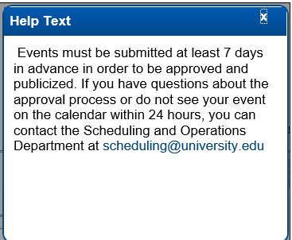
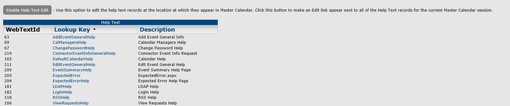
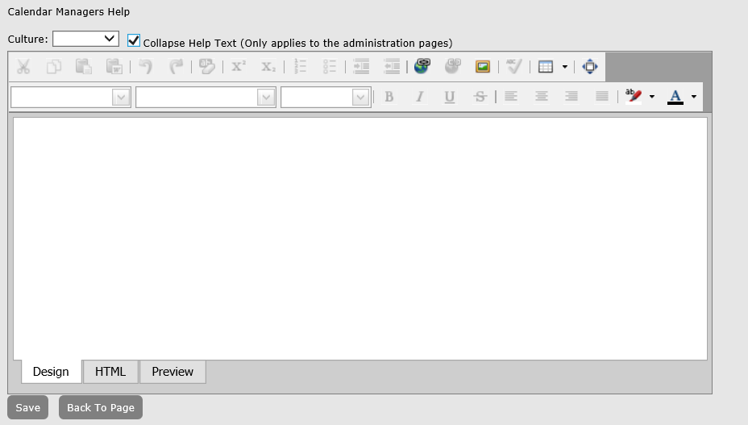

As the Master Calendar site administrator, you can customize messages in key areas of your system that provides organization-specific information or hints to your users about how to use Master Calendar. For example, you might want to place help text above a calendar that explains what type of events that a user should and should not post to the calendar.

Sample Help Text
You have two options for managing help text in Master Calendar—from the Help Text function on the Admin menu, or by clicking an Edit link next to the help text on a page.
From the Admin Panel, navigate to Admin > Site Administration > Help Text. The Help Text page opens. By default, when the page first opens, Help Text Edit mode is disabled.

Cultures—If you have configured cultures for Master Calendar, then these cultures are displayed in a Culture dropdown list. You can select a different culture (language) in which the help text is to be displayed. The guest’s or user’s browser language must be set to the appropriate culture (language) to display these translations.

Toggle Enable Help Text. The message “Help Text Mode is now enabled” is displayed above the toggle, and the toggle now reads “Disable Help Text Edit.”